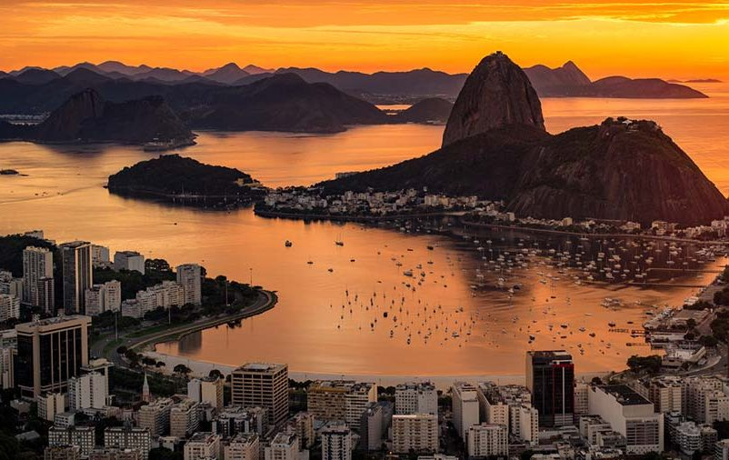

Cristo redentor

Cristo Redentor é uma estátua art déco que retrata Jesus Cristo, localizada no topo do morro do Corcovado, a 709 metros acima do nível do mar, no Parque Nacional da Tijuca, com vista para a maior parte da cidade do Rio de Janeiro, Brasil. Em 2007 foi eleito informalmente como uma das sete maravilhas do mundo moderno. Em 2012 a UNESCO considerou o Cristo Redentor como parte da paisagem do Rio de Janeiro incluída na lista de Patrimônios da Humanidade. O monumento foi concebido pelo engenheiro brasileiro Heitor da Silva Costa e construído em colaboração com o escultor francês Paul Landowski e com o engenheiro compatriota Albert Caquot, entre 1922 e 1931 na França, devido o pensamento dos franceses, de que os brasileiros não tinham experiência para construir a estátua. Foi inaugurada no dia 12 de outubro de 1931, dia de Nossa Senhora Aparecida e fica no bairro do Alto da Boa Vista. Símbolo do cristianismo brasileiro, a estátua se tornou um ícone do Rio de Janeiro e do Brasil. Em 2011, em uma pesquisa de opinião pela internet, o Cristo Redentor foi considerado por 23,5 % de 1 734 executivos de todos os países da região como o maior símbolo da América Latina. O monumento também é um importante ponte de visitação, que recebe, em média, 2 milhões de turistas por ano.
Para saber mais sobre a estátua de cristo redentor basta clicar aqui para mais informações.
Paisagem rio de Janeiro
O Rio de Janeiro herdou de seu passado uma forte vocação cultural. Na Literatura do Brasil, efetivamente, aos primeiros decênios do século XVIII, quando da instalação das "academias" e "associações" com finalidades eruditas, a cidade - como centro colonial mais expressivo - testemunhou, desde então, a gênese e consolidação de diversas escolas e movimentos. Escritores como Machado de Assis, Olavo Bilac, Carlos Drummond de Andrade, Clarice Lispector, Guimarães Rosa, Cecília Meireles, Graciliano Ramos, Nélida Piñon - entre outros - conduziram parte significativa de suas carreiras no Rio de Janeiro. A Academia Brasileira de Letras (ABL), fundada em 1896, segundo o modelo da Academia Francesa, teve, em sua concepção, a atuação de Medeiros e Albuquerque, Lúcio de Mendonça e Machado de Assis. Quanto aos pontos de referência do turismo cultural, podem-se elencar, entre tantos, o Museu do Amanhã, o Museu Histórico Nacional, o Museu Nacional da Universidade Federal do Rio de Janeiro, o Museu Casa do Pontal, o Museu Nacional de Belas Artes, a Biblioteca Nacional, o Museu de Arte Moderna (MAM), o Real Gabinete. Português de Leitura, o Palácio do Catete, o Riocentro, o Canecão, o Cais do Valongo e o Theatro Municipal.
Para saber mais sobre as paisagem de rio de janeiro basta clicar aqui para mais informações.